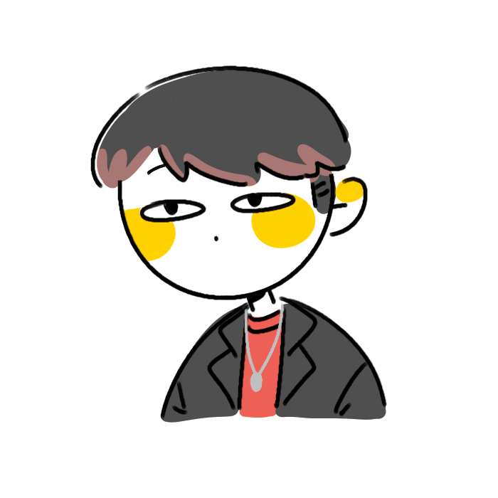

@Pepsi.kim

정지윤 (김펩시)
2002.02.28 출생 (만 18세)
세부전공 디자인
경기도 안산시 단원구 거주
학력 사항
2020.01.06 안산강서고등학교 졸업
2020.03.30 계원예술대학교 디지털미디어디자인과 입학
교내 활동
2020.03.30 ~ 20.12.13 계원예술대학교 대학일자리센터 서포터즈 2기
2020.11.05 ~ 20.11.30 계원예술대학교 '허브' 선거본부위원
수상 이력
2020.08.11 워크넷 홍보물 제작 성과발표회 입상